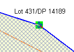

Create or Change Parcels
When new land is being acquired by the state land agency or there are changes required to
existing state land parcels, you can use the Create or Change Parcels task to make those
changes. This includes changes to any text details for the parcel (e.g. area,
description, state land status, land use or locality) as well as changing the spatial
definition for the parcel.
The Create or Change Parcels task provides tools that allow you to modify the network of
state land parcels. The following describes the basic process flow for capturing parcel
information. Variations to this basic flow are possible.
Steps
-
-
Lodge a new job. Make sure it includes the Create or Change Parcels task.
-
From the Tasks tab of the Job Details screen, select the Create or Change task and
click the
 Start tool. This will open
the Parcel Map Editor screen.
Start tool. This will open
the Parcel Map Editor screen.
-
If the Map Viewer is not already zoomed to the location of the job, use the map search
or the map navigation tools to locate the area for the job.
-
If the parcel(s) you need to edit are already displayed in the map (either as state
land parcels or underlying parcels), use the Select State Land Feature tool
 to add those parcels to the
job by clicking them. The Parcel Details screen will display allowing you to edit any
of the parcel information as required.
to add those parcels to the
job by clicking them. The Parcel Details screen will display allowing you to edit any
of the parcel information as required.
-
If you need to change the shape of an existing state land parcel, make sure you have
selected the parcel first using the Select State Land Feature tool , then use the Edit State Land
Parcel tool
 to change the
parcel shape.
to change the
parcel shape.
-
To move a node on a state land parcel hover the mouse above the node you wish to
move. The node should change colour and display a green square. Press and hold the
left mouse button to pick up the node and drag it to its new location. Release the
left mouse button to drop the node.

Selecting a parcel node
-
-
-
To add a new node to a parcel, use the mouse to left click anywhere on the parcel
boundary (i.e. on the dark blue line). A new node will be added at the location you
clicked.
-
To remove a node from the parcel boundary, hover the mouse over the node you which
to remove until it shows as a green square, then hold down the SHIFT key and left
click the node. The parcel boundary will be redrawn with the node removed.
-
If you need to add a new state land parcel, use the Add New State Land Parcel tool and click the map to trace the
boundary nodes of the parcel. Double click the last boundary point to complete the
capture. This will display the Parcel Details screen with default values for the plan
number and area. Correct these values if necessary and enter the parcel number along
with any other relevant information before you
 Close the Parcel Details screen.
Close the Parcel Details screen.
-
If you click the wrong location for one of the parcel nodes, continue to capture
the parcel and use the Edit State Land Parcel tool to fix the node later.
-
To view the list of parcels that are part of the job, click the State Land Parcel List
tool
 . From the State Land Parcel List
screen you can
. From the State Land Parcel List
screen you can  View,
View,  Edit and
Edit and  Remove parcels from the
job by selecting the parcel you wish to view, edit or remove and clicking the
appropriate toolbar button.
Remove parcels from the
job by selecting the parcel you wish to view, edit or remove and clicking the
appropriate toolbar button.
-
Be sure to set the relevant state land status for each parcel as follows
-
The parcel should have a status of Proposed until it has been formally purchased
(or leased) by the state.
-
Once purchased (or leased), the parcel should be assigned a status of Current.
-
If the parcel is no longer actively used by the state which can occur in the case
of land banking, the status should be set to Dormant.
-
When the parcel is identified as surplus to requirements and it is a candidate for
disposal, the status should be set to Surplus
-
Once the parcel has been formally sold (or the lease has expired), the status of
the parcel should be set to Disposed.
-
Once all of the relevant information has been captured
 Save the Parcel Map Editor then close it by
clicking the green X in the top left of the title bar.
Save the Parcel Map Editor then close it by
clicking the green X in the top left of the title bar.
-
On the Tasks tab of the Job Details screen, select the Create or Change Parcel task and
click the
 Complete tool. This will
run the SOLA State Land business rules to validate the job data. If there is a critical
failure, you must remedy the failure as it will not be possible to approve the job
otherwise.
Complete tool. This will
run the SOLA State Land business rules to validate the job data. If there is a critical
failure, you must remedy the failure as it will not be possible to approve the job
otherwise.
-
If all tasks for the job are complete (or cancelled), proceed with approving (and
archiving) the job.
Notes
-
-
Use Save on the Parcel Map Editor
screen regularly.
-
The act of saving and/or completing the service will cause the SOLA business rules to
run validating the state of the data. If you receive rule failures, check Appendix 1 -
SOLA State Land Business Rules to determine how those failures can be
remedied.
-
Additional information on using the Create or Change Parcel tools can be found in the
Parcel Map Editor section.
Also See
-
-
SOLA State Land
-
State Land Desktop Screens